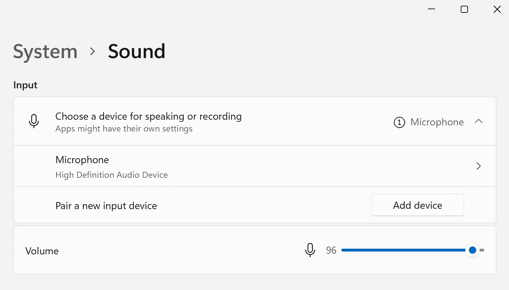
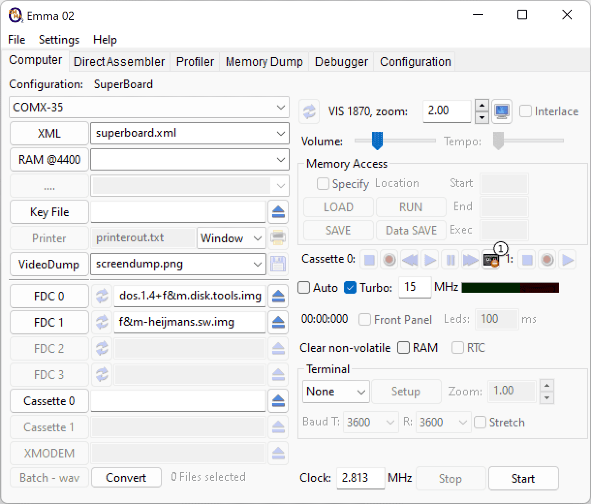
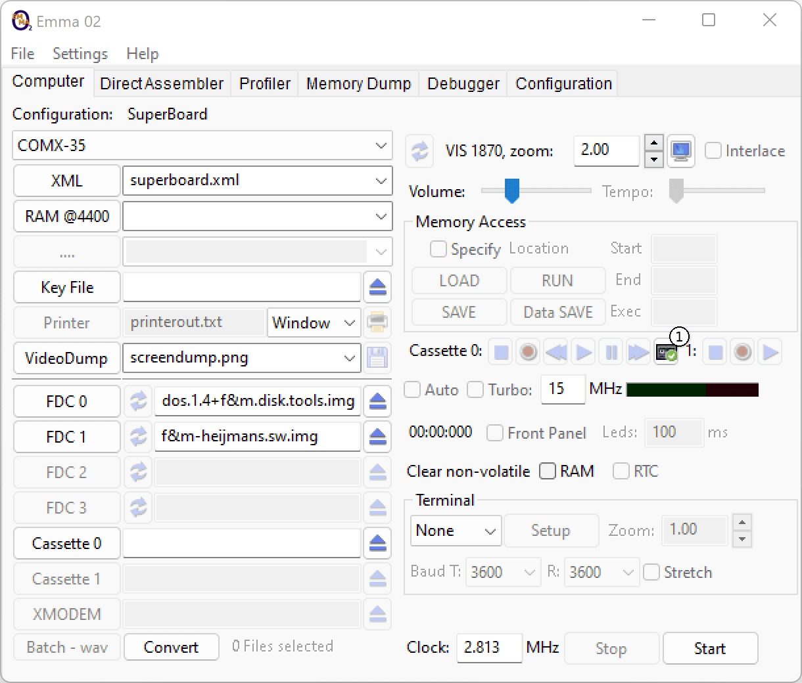
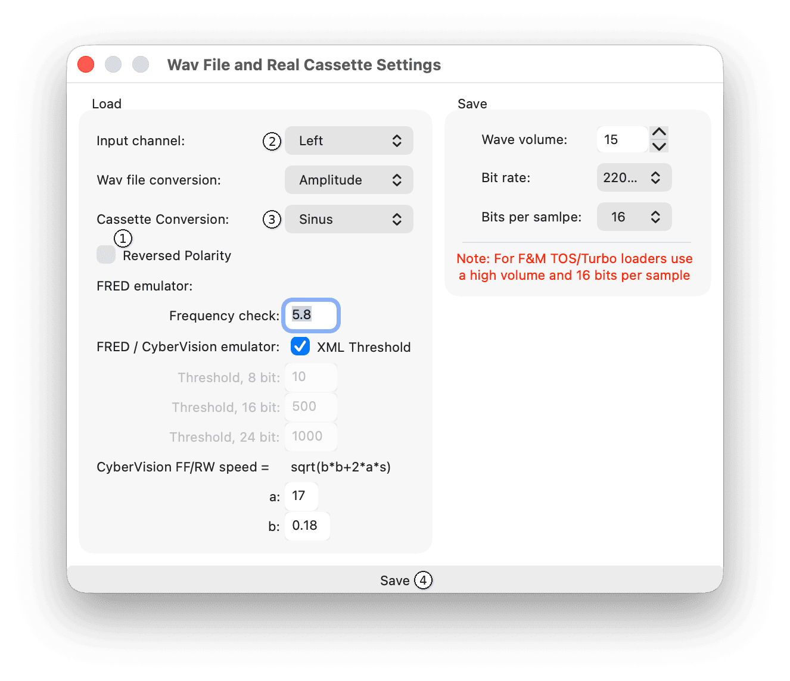

Note: Real cassette support is currently NOT implemented in the macOS version!
To use Real Cassette Support, open the Windows Sound settings and set the Recording Device to line-in or microphone (1) as shown below.

In the Emma 02 GUI, press the Real Cassette Support button (1) to enable or disable Real Cassette Support.
Disabled:

Enabled:

Important: When real cassette loading is active, the Turbo and Auto load/save features are disabled.
Wave file saving remains possible; wave file loading is disabled until real cassette loading is switched off.
After starting the emulated computer, start the tape recorder and use the applicable load command.
Start Tape : Start cassette player Load Program : Use computer-specific load command Adjust Volume : Keep VU meter out of the red
The input volume can be seen on the VU meter:
Note: Best results are achieved when the VU meter stays out of the red area.
If the VU meter goes into the red, lower the cassette player volume. Alternatively, lower the audio input level via recording device properties in the Windows Sound control panel.
Note: If loading does not work or gives tape errors, change one of the settings as described in the Settings section below.
Open Wav File and Real Cassette Settings via the menu shown below.
The main controls for Real Cassette Settings are shown in the screenshot below. The numbered markers in the screenshot correspond to the descriptions in the following subsections.

Press the Save button (4) to save the settings.
This switches the converted signal polarity (1->0 and 0->1).
This selects the left or right cassette player sound channel.
Note: By default, this is set to the left channel. Only the left channel has been successfully tested with a real cassette player.
Only change this setting if the VU meter shows no signal when playing a tape.
Two conversion types are available:
Note: By default, this is set to Sinus which has been tested successfully with a real COMX tape.
Depending on the emulated computer, change this setting if loading does not work or gives tape errors.